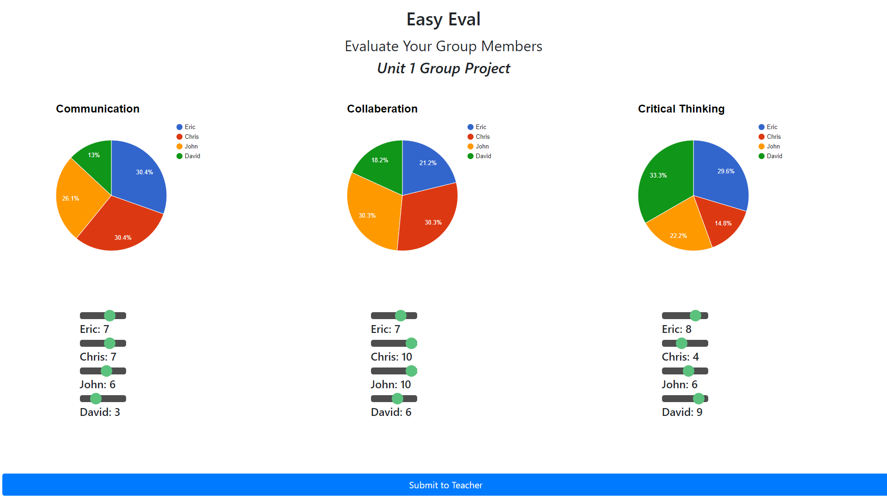
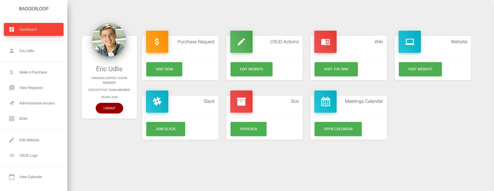
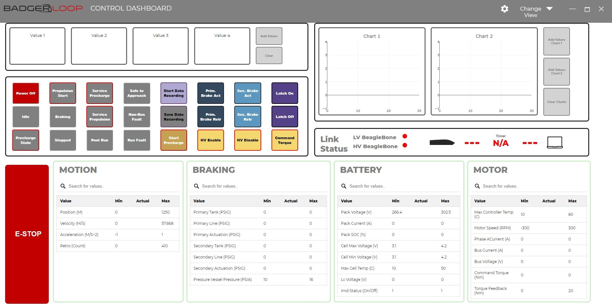

Eric Udlis
I am a sophomore at the University of Wisconsin - Madison majoring in Computer Engineering.
Experience
Software Team Lead
Run the Software Team on UW - Madison's entry in the SpaceX Hyperloop Pod Competition. Responsible for the creation of the flight dashboard.
Fondy Volunteers Website Manager
Provide part time support and management of the Fond du Lac Volunteer Hub, FondyVolunteers. Manages a GalaxyDigital volunteer management system and CMS. Interacts directly with volunteers and agencies to provide customer support. Writes custom CSS and HTML to keep the site looking modern while fitting with the United Way theme.
K-12 Robotics Instructor
Teach a group of 30 students at various ages introduction to programming and critical thinking using a curriculum I created. Camps run from 3 days to 10 weeks over the summer
Office Intern
Create both internal documents and publications to promote non-profit and volunteering. Developed and maintained organization website and online volunteer portal. Interacted with agency and corporate partners in one on one meetings and large presentations.
Education
University of Wisconsin - Madison
GPA: 3.24
Skills
- Linux
- Electron
- MongoDB & Diskdb
- Autodesk Inventor & Fusion 360
- GitLabs CI/CD
Interests
Away from the computer I enjoy competitively swimming and cycling.
In my free time I work on various hardware projects and compete with the UW- Madison Badgerloop Team
Projects
In my free time I like to work on personal projects for both myself and organizations I am apart of, these are my most notable ones.
This app allows teachers to create completely custom assignments defining their own standards and grading scale. Teachers create a project and give students a pin number and they are ready to go. No accounts necessary. Then once all the results are in, teachers can export their results in several formats for easy importing into their grading program.

The main process is running on a Raspberry Pi 3 using Electron to host a webpage. There are several modules, some of which created by contributors on GitHub. I created a couple modules to interface with Amazon Alexa, and control a strip of WS2812 LEDs over a Web Server. The mirror hosts a web page that serves as a remote control for easy configuration.

The web-app is being hosted on an Apache WebServer running on Ubuntu. Using a custom Slack App to interface with our workspace.

The application is written as a webpage hosted with Electron. All pod communications are through TCP and UDP. All responsive applications are through modifying the DOM. The dashboard is updated automatically based on a single JSON file shared between the pod's onboard BeagleBone Blacks and the dashboard computer.

These tests will run on updates to the master branch on our development repository. Then report the results of the test over Box file sharing.